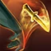
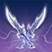
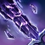
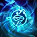
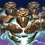

Guida di livellamento da 1 a CP160, verso la build Solo Magicka Sorcerer di Hyperioxes (Update 50): niente pet, dual wield daggers davanti, DOT e sustain da Critical Surge. Fonte: guida Solo Magicka Sorcerer di Hyperioxes ↗
Segui quest'ordine per livellare





Pre-buff
Rotazione principale
Setup finale · Overland (Base) — Hyperioxes U50
Composizione completa — Overland (Base)
| Pezzo | Set | Peso | Trait | Enchant |
|---|---|---|---|---|
| Testa | Slimecraw | Medium | Divines | Max Magicka |
| Spalle | Beacon of Oblivion | Light | Divines | Max Magicka |
| Petto | Sul-Xan's Torment | Medium | Divines | Max Magicka |
| Mani | Beacon of Oblivion | Light | Divines | Max Magicka |
| Cintura | Beacon of Oblivion | Light | Divines | Max Magicka |
| Gambe | Beacon of Oblivion | Medium | Divines | Max Magicka |
| Piedi | Beacon of Oblivion | Light | Divines | Max Magicka |
| Collana | Sul-Xan's Torment | — | Bloodthirsty | Spell Damage |
| Anello 1 | Sul-Xan's Torment | — | Bloodthirsty | Spell Damage |
| Anello 2 | Ring of the Pale Order | — | Bloodthirsty | Spell Damage |
| Front — Dagger 1 | Sul-Xan's Torment | Dagger | Charged | Poison |
| Front — Dagger 2 | Sul-Xan's Torment | Dagger | Charged | Flame |
| Back — Staff | Crushing Wall | Lightning | Infused | Weapon Damage |